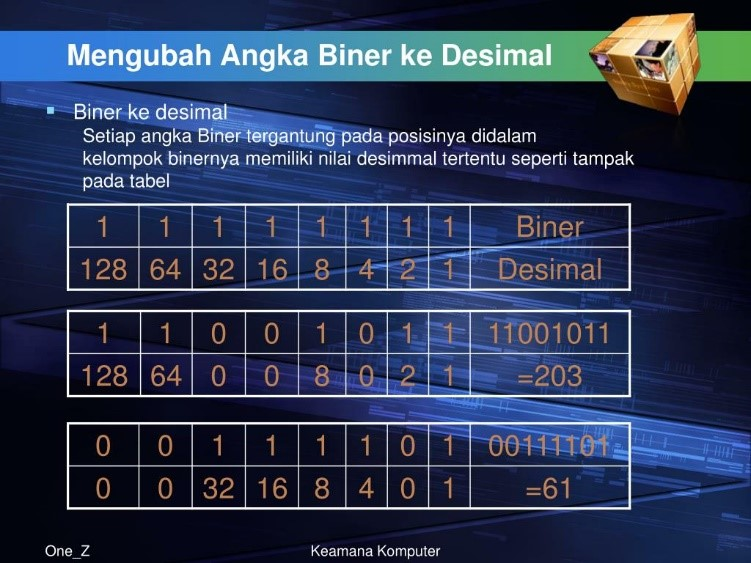

Data adalah angka, informasi, atau rekaman yang digunakan sebagai dasar untuk pengambilan keputusan, analisis, penelitian, atau tujuan lainnya. Data dapat berupa berbagai jenis, seperti teks, angka, gambar, audio, atau video, dan dapat mewakili berbagai jenis informasi.
Data Numerik : Data Numerik merupakan data yang berupa angka maupun bilangan, bisa dalam bentuk integer, float dan sebagainya.
Data Non Numerik : Data Non Numerik adalah data yang bukan berupa angka maupun bilangan.
SISTEM DESIMAL
Sistem desimal merupakan sistem bilangan yang digunakan sehari-hari. Desimal terdiri dari angka 0,1,2,3,4,5,6,7,8,9. 83 = (8x10) + 3 Desimal memiliki base atau radix 10, jadi dapat disimpulkan sebagai berikut : 83 = (8x10^1) + (3x10^0)
SISTEM BINER
Sistem biner merupakan system bilangan yang terdiri dari angka 0 dan 1. 1 = 0001 8 = 1000 Sistem biner memiliki base atau radix 2, jadi dapat disimpulkan sebagai berikut : Contoh berikut pada 4 bit 1 = 0*2^3 + 0*2^2 + 0*2^1 + 0*2^0
INTEGERS
Integers atau bilangan bulat merupakan bilangan yang terdiri dari nilai positif, negatif dan bukan berupa pecahan/desimal. Contoh bilangan bulat adalah -5, 0, 8 Pada pemrograman integers akan dinotasikan sebagai int. Dengan 8 bit data, maka nilai integers adalah sebagai berikut : 00000000 = 0 00000001 = 1 00101001 = 41 10000000 = 128
BILANGAN REAL
Bilangan real adalah bilangan yang terdapat pecahan atau desimal.Pada bahasa pemrograman bilang real di notasikan sebagai float dan double
BILANGAN CACAH
Bilangan cacah adalah bilang bulat tanpa nilai negatif.
TEXT
Data teks pada komputer mengacu pada cara teks atau informasi berbasis teks direpresentasikan, disimpan, dan dikelola dalam sistem komputer. Representasi ini mencakup cara karakter, kata, kalimat, dan dokumen dalam bentuk teks direpresentasikan dalam format biner yang dapat dipahami dan diolah oleh komputer.
IMAGE
Representasi Citra Digital -> semua gambar yang bisa disimpan/diolah pada komputer/piranti digital disebut dengan citra digital (atau sering disebut citra saja). Citra tersusun dari elemen - elemen terkecil yang disebut Pixel (picture element).Banyaknya pixel pada sebuah citra disebut dengan Resolusi.